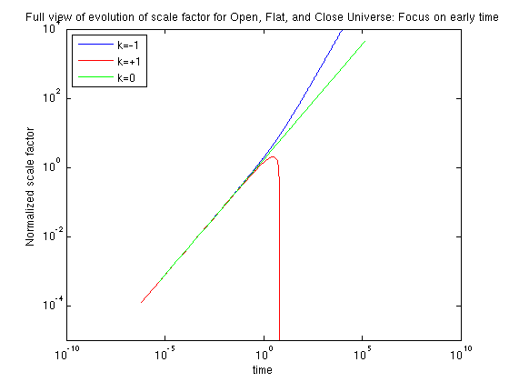

Cosmological Evolution and Dependence On Curvature
The curvature of the universe is a parameter describing both the topology and the evolution of the universe as it changes in time. Curvature is parameterized by a value k found in the Friedmann Equations. k may be defined in two ways: here we choose the definition such that k = {-1,0,1}, which means the scale factor a(t) has units of length and in the case k=+1,-1, a(t) gives the radius of curvature of space and is often expressed as R(t).
For k=-1, the universe is open and infinite in extent. This curvature implies the universe will evolve hyperbolically and never collapse back upon itself.
k=0 describes a flat geometry and is presumably the correct description of our own universe.
For k=+1 the universe is closed and the scale factor follows a symmetric cycloid solution.
Our purpose here is to coincidentally plot the evolution of the scale factor for a universe with these three gemoetries in order to visualize the similarities and differences in their evolution.
Contents
Plotting the Evolution
We plot the evolution of the normalized radius, as a function of time (using parameterization for the cases and the analytic solution to the Friedmann Equations for the case).
theta = linspace(0,2*pi,400); % First we define a vector for the parameter % Case 1: k=-1, Open figure(1); clf R1 = 2*sinh(theta).^2; t1 = sinh(2*theta)-2*theta; loglog(t1,R1) % Note that I plot in loglog space. xlabel('time') ylabel('Normalized scale factor') title('Full view of evolution of scale factor for Open, Flat, and Close Universe: Focus on early time') ylim([10^-5 10^4]) hold on % Case 2: k=+1, Closed theta = linspace(0,pi,400); % k=+1 universe closes on itself when parameter goes to pi R2 = 2*sin(theta).^2; t2 = 2*theta-sin(2*theta); loglog(t2,R2,'r') % Case 3: k=0, Flat R3 = 2.0^(-1/3) *3^(2/3.) * t1.^(2./3); % It doesn't matter what vector I use for time loglog(t1,R3,'g') legend('k=-1','k=+1','k=0', 'Location', 'NorthWest') % 'NorthWest' specifies % the 'Location' of the legend on the % plot. hold off % I plot this in log-log space to emphasize the fact that all three % solutions converge for small values of time, i.e. the early universe % evolved the same regardless of the nature of the curvature. However, % plotting like this obscures the fact that the evolution for a closed % universe follows a symmetric cycloid. To illustrate this I plot the % curves on a linear axis plot: figure(2); clf plot(t2,R2,'.r') hold on plot(t1(1:100),R3(1:100),'g') % I restrict the range of theta so that the % timerange covered for all three solutions % is roughtly equivalent plot(t1(1:100),R1(1:100)) xlabel('time') ylabel('Normalized scale factor') title('Symmetric Cycloid solution for k=+1') legend('k=+1','k=0','k=-1', 'Location', 'NorthWest')